| authors: | Gaël Varoquaux |
|---|
Mathematical optimization deals with the problem of finding numerically minimums (or maximums or zeros) of a function. In this context, the function is called cost function, or objective function, or energy.
Here, we are interested in using scipy.optimize for black-box optimization: we do not rely on the mathematical expression of the function that we are optimizing. Note that this expression can often be used for more efficient, non black-box, optimization.
Prerequisites
References
Mathematical optimization is very ... mathematical. If you want performance, it really pays to read the books:
Chapters contents
Not all optimization problems are equal. Knowing your problem enables you to choose the right tool.
Dimensionality of the problem
The scale of an optimization problem is pretty much set by the dimensionality of the problem, i.e. the number of scalar variables on which the search is performed.
| 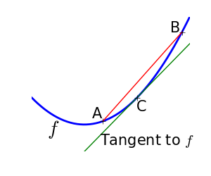 | 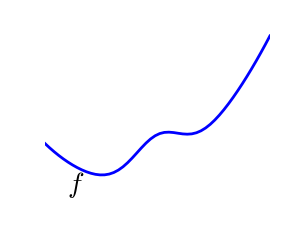 |
A convex function:
|
A non-convex function |
Optimizing convex functions is easy. Optimizing non-convex functions can be very hard.
Note
A convex function provably has only one minimum, no local minimums
| 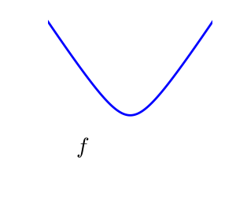 | 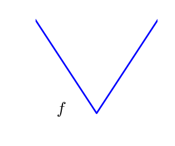 |
A smooth function: The gradient is defined everywhere, and is a continuous function |
A non-smooth function |
Optimizing smooth functions is easier.
| Noisy (blue) and non-noisy (green) functions | 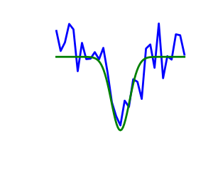 |
Noisy gradients
Many optimization methods rely on gradients of the objective function. If the gradient function is not given, they are computed numerically, which induces errors. In such situation, even if the objective function is not noisy,
Optimizations under constraints Here: \(-1 < x_1 < 1\) \(-1 < x_2 < 1\) |
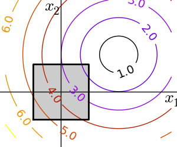 |
Use scipy.optimize.brent() to minimize 1D functions. It combines a bracketing strategy with a parabolic approximation.
| Brent’s method on a quadratic function: it converges in 3 iterations, as the quadratic approximation is then exact. |  |
 |
| Brent’s method on a non-convex function: note that the fact that the optimizer avoided the local minimum is a matter of luck. |  |
 |
>>> from scipy import optimize
>>> def f(x):
... return -np.exp(-(x - .7)**2)
>>> x_min = optimize.brent(f) # It actually converges in 9 iterations!
>>> x_min
0.6999999997759...
>>> x_min - .7
-2.1605...e-10
Note
Brent’s method can be used for optimization constraint to an intervale using scipy.optimize.fminbound()
Note
In scipy 0.11, scipy.optimize.minimize_scalar() gives a generic interface to 1D scalar minimization
Here we focus on intuitions, not code. Code will follow.
Gradient descent basically consists consists in taking small steps in the direction of the gradient.
| A well-conditionned quadratic function. | 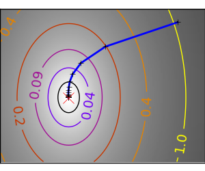 | 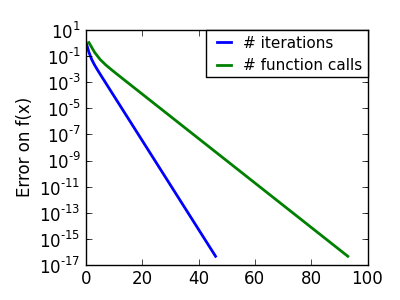 |
An ill-conditionned quadratic function. The core problem of gradient-methods on ill-conditioned problems is that the gradient tends not to point in the direction of the minimum. |
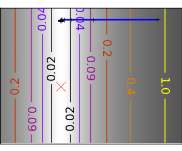 | 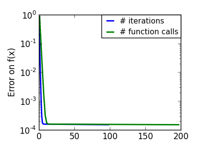 |
We can see that very anisotropic (ill-conditionned) functions are harder to optimize.
Take home message: conditioning number and preconditioning
If you know natural scaling for your variables, prescale them so that they behave similarly. This is related to preconditioning.
Also, it clearly can be advantageous to take bigger steps. This is done in gradient descent code using a line search.
| A well-conditionned quadratic function. | 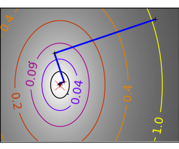 | 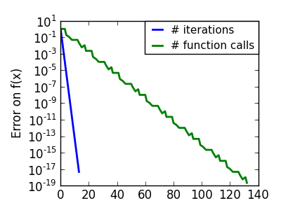 |
| An ill-conditionned quadratic function. | 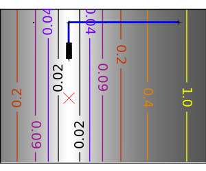 | 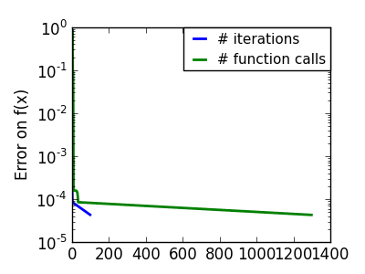 |
| An ill-conditionned non-quadratic function. | 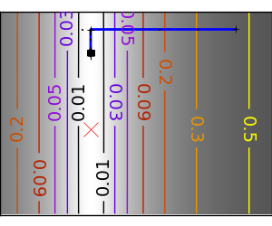 | 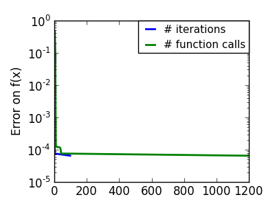 |
| An ill-conditionned very non-quadratic function. | 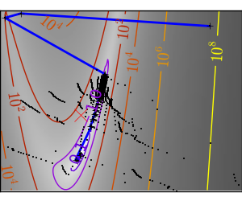 | 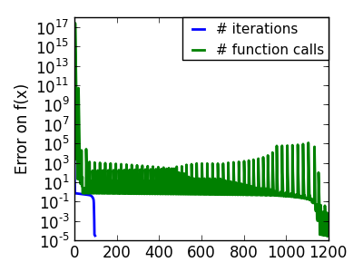 |
The more a function looks like a quadratic function (elliptic iso-curves), the easier it is to optimize.
The gradient descent algorithms above are toys not to be used on real problems.
As can be seen from the above experiments, one of the problems of the simple gradient descent algorithms, is that it tends to oscillate across a valley, each time following the direction of the gradient, that makes it cross the valley. The conjugate gradient solves this problem by adding a friction term: each step depends on the two last values of the gradient and sharp turns are reduced.
| An ill-conditionned non-quadratic function. | 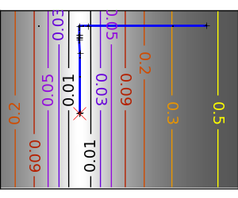 | 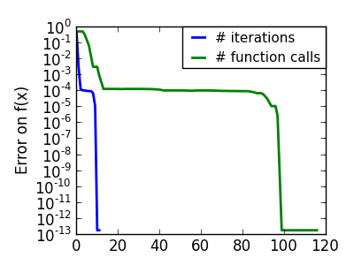 |
| An ill-conditionned very non-quadratic function. | 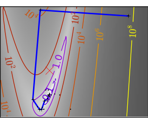 | 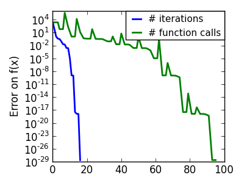 |
Methods based on conjugate gradient are named with ‘cg’ in scipy. The simple conjugate gradient method to minimize a function is scipy.optimize.fmin_cg():
>>> def f(x): # The rosenbrock function
... return .5*(1 - x[0])**2 + (x[1] - x[0]**2)**2
>>> optimize.fmin_cg(f, [2, 2])
Optimization terminated successfully.
Current function value: 0.000000
Iterations: 13
Function evaluations: 120
Gradient evaluations: 30
array([ 0.99998968, 0.99997855])
These methods need the gradient of the function. They can compute it, but will perform better if you can pass them the gradient:
>>> def fprime(x):
... return np.array((-2*.5*(1 - x[0]) - 4*x[0]*(x[1] - x[0]**2), 2*(x[1] - x[0]**2)))
>>> optimize.fmin_cg(f, [2, 2], fprime=fprime)
Optimization terminated successfully.
Current function value: 0.000000
Iterations: 13
Function evaluations: 30
Gradient evaluations: 30
array([ 0.99999199, 0.99997536])
Note that the function has only been evaluated 30 times, compared to 120 without the gradient.
Newton methods use a local quadratic approximation to compute the jump direction. For this purpose, they rely on the 2 first derivative of the function: the gradient and the Hessian.
An ill-conditionned quadratic function: Note that, as the quadratic approximation is exact, the Newton method is blazing fast |
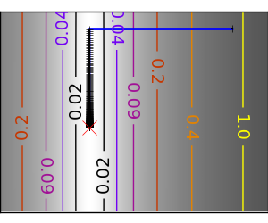 | 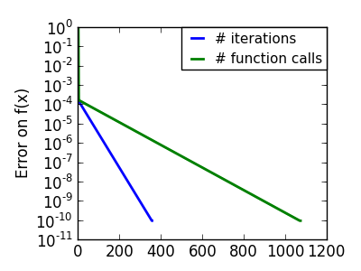 |
An ill-conditionned non-quadratic function: Here we are optimizing a Gaussian, which is always below its quadratic approximation. As a result, the Newton method overshoots and leads to oscillations. |
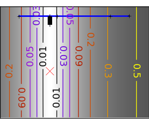 | 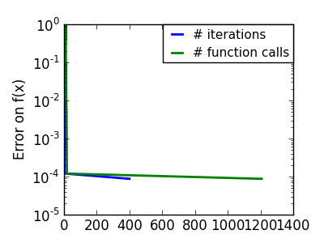 |
| An ill-conditionned very non-quadratic function: | 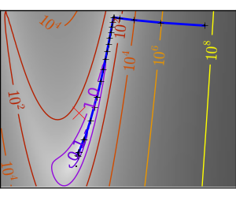 | 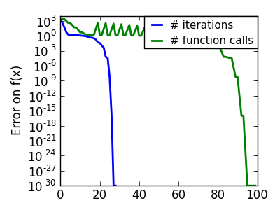 |
In scipy, the Newton method for optimization is implemented in scipy.optimize.fmin_ncg() (cg here refers to that fact that an inner operation, the inversion of the Hessian, is performed by conjugate gradient). scipy.optimize.fmin_tnc() can be use for constraint problems, although it is less versatile:
>>> def f(x): # The rosenbrock function
... return .5*(1 - x[0])**2 + (x[1] - x[0]**2)**2
>>> def fprime(x):
... return np.array((-2*.5*(1 - x[0]) - 4*x[0]*(x[1] - x[0]**2), 2*(x[1] - x[0]**2)))
>>> optimize.fmin_ncg(f, [2, 2], fprime=fprime)
Optimization terminated successfully.
Current function value: 0.000000
Iterations: 10
Function evaluations: 12
Gradient evaluations: 44
Hessian evaluations: 0
array([ 1., 1.])
Note that compared to a conjugate gradient (above), Newton’s method has required less function evaluations, but more gradient evaluations, as it uses it to approximate the Hessian. Let’s compute the Hessian and pass it to the algorithm:
>>> def hessian(x): # Computed with sympy
... return np.array(((1 - 4*x[1] + 12*x[0]**2, -4*x[0]), (-4*x[0], 2)))
>>> optimize.fmin_ncg(f, [2, 2], fprime=fprime, fhess=hessian)
Optimization terminated successfully.
Current function value: 0.000000
Iterations: 10
Function evaluations: 12
Gradient evaluations: 10
Hessian evaluations: 10
array([ 1., 1.])
Note
At very high-dimension, the inversion of the Hessian can be costly and unstable (large scale > 250).
Note
Newton optimizers should not to be confused with Newton’s root finding method, based on the same principles, scipy.optimize.newton().
BFGS: BFGS (Broyden-Fletcher-Goldfarb-Shanno algorithm) refines at each step an approximation of the Hessian.
An ill-conditionned quadratic function: On a exactly quadratic function, BFGS is not as fast as Newton’s method, but still very fast. |
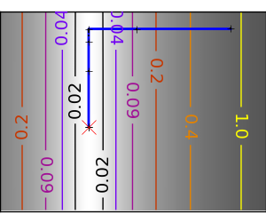 | 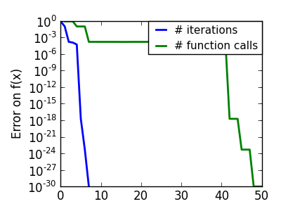 |
An ill-conditionned non-quadratic function: Here BFGS does better than Newton, as its empirical estimate of the curvature is better than that given by the Hessian. |
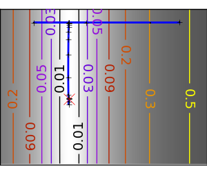 | 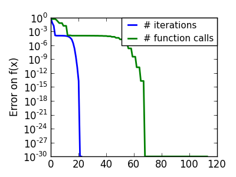 |
| An ill-conditionned very non-quadratic function: | 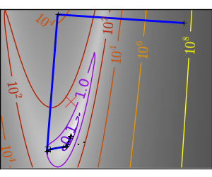 | 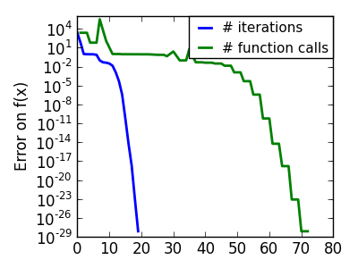 |
>>> def f(x): # The rosenbrock function
... return .5*(1 - x[0])**2 + (x[1] - x[0]**2)**2
>>> def fprime(x):
... return np.array((-2*.5*(1 - x[0]) - 4*x[0]*(x[1] - x[0]**2), 2*(x[1] - x[0]**2)))
>>> optimize.fmin_bfgs(f, [2, 2], fprime=fprime)
Optimization terminated successfully.
Current function value: 0.000000
Iterations: 16
Function evaluations: 24
Gradient evaluations: 24
array([ 1.00000017, 1.00000026])
L-BFGS: Limited-memory BFGS Sits between BFGS and conjugate gradient: in very high dimensions (> 250) the Hessian matrix is too costly to compute and invert. L-BFGS keeps a low-rank version. In addition, the scipy version, scipy.optimize.fmin_l_bfgs_b(), includes box bounds:
>>> def f(x): # The rosenbrock function
... return .5*(1 - x[0])**2 + (x[1] - x[0]**2)**2
>>> def fprime(x):
... return np.array((-2*.5*(1 - x[0]) - 4*x[0]*(x[1] - x[0]**2), 2*(x[1] - x[0]**2)))
>>> optimize.fmin_l_bfgs_b(f, [2, 2], fprime=fprime)
(array([ 1.00000005, 1.00000009]), 1.4417677473011859e-15, {'warnflag': 0, 'task': 'CONVERGENCE: NORM_OF_PROJECTED_GRADIENT_<=_PGTOL', 'grad': array([ 1.02331202e-07, -2.59299369e-08]), 'funcalls': 17})
Note
If you do not specify the gradient to the L-BFGS solver, you need to add approx_grad=1
Almost a gradient approach
An ill-conditionned quadratic function: Powell’s method isn’t too sensitive to local ill-conditionning in low dimensions |
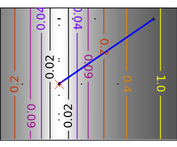 | 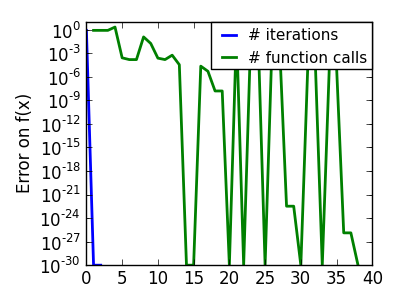 |
| An ill-conditionned very non-quadratic function: |  |
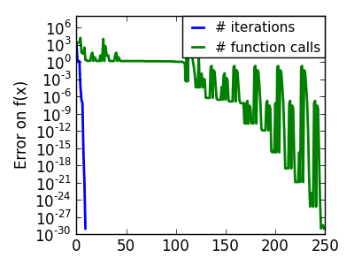 |
The Nelder-Mead algorithms is a generalization of dichotomy approaches to high-dimensional spaces. The algorithm works by refining a simplex, the generalization of intervals and triangles to high-dimensional spaces, to bracket the minimum.
Strong points: it is robust to noise, as it does not rely on computing gradients. Thus it can work on functions that are not locally smooth such as experimental data points, as long as they display a large-scale bell-shape behavior. However it is slower than gradient-based methods on smooth, non-noisy functions.
| An ill-conditionned non-quadratic function: | 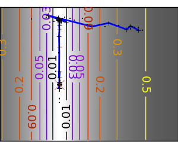 |  |
| An ill-conditionned very non-quadratic function: | 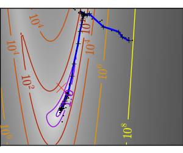 | 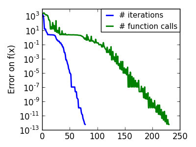 |
In scipy, scipy.optimize.fmin() implements the Nelder-Mead approach:
>>> def f(x): # The rosenbrock function
... return .5*(1 - x[0])**2 + (x[1] - x[0]**2)**2
>>> optimize.fmin(f, [2, 2])
Optimization terminated successfully.
Current function value: 0.000000
Iterations: 46
Function evaluations: 91
array([ 0.99998568, 0.99996682])
If your problem does not admit a unique local minimum (which can be hard to test unless the function is convex), and you do not have prior information to initialize the optimization close to the solution, you may need a global optimizer.
scipy.optimize.brute() evaluates the function on a given grid of parameters and returns the parameters corresponding to the minimum value. The parameters are specified with ranges given to numpy.mgrid. By default, 20 steps are taken in each direction:
>>> def f(x): # The rosenbrock function
... return .5*(1 - x[0])**2 + (x[1] - x[0]**2)**2
>>> optimize.brute(f, ((-1, 2), (-1, 2)))
array([ 1.00001462, 1.00001547])
Simulated annealing does random jumps around the starting point to explore its vicinity, progressively narrowing the jumps around the minimum points it finds. Its output depends on the random number generator. In scipy, it is implemented in scipy.optimize.anneal():
>>> def f(x): # The rosenbrock function
... return .5*(1 - x[0])**2 + (x[1] - x[0]**2)**2
>>> optimize.anneal(f, [2, 2])
Warning: Cooled to 5057.768838 at [ 30.27877642 984.84212523] but this
is not the smallest point found.
(array([ -7.70412755, 56.10583526]), 5)
It is a very popular algorithm, but it is not very reliable.
Note
For function of continuous parameters as studied here, a strategy based on grid search for rough exploration and running optimizers like the Nelder-Mead or gradient-based methods many times with different starting points should often be preferred to heuristic methods such as simulated annealing.
| Without knowledge of the gradient: | |
|---|---|
|
|
| With knowledge of the gradient: | |
|
|
| With the Hessian: | |
|
|
| If you have noisy measurements: | |
|
|
Computing gradients, and even more Hessians, is very tedious but worth the effort. Symbolic computation with Sympy may come in handy.
Warning
A very common source of optimization not converging well is human error in the computation of the gradient. You can use scipy.optimize.check_grad() to check that your gradient is correct. It returns the norm of the different between the gradient given, and a gradient computed numerically:
>>> optimize.check_grad(f, fprime, [2, 2])
2.384185791015625e-07
See also scipy.optimize.approx_fprime() to find your errors.
Exercice: A simple (?) quadratic function
Optimize the following function, using K[0] as a starting point:
np.random.seed(0)
K = np.random.normal(size=(100, 100))
def f(x):
return np.sum((np.dot(K, x - 1))**2) + np.sum(x**2)**2
Time your approach. Find the fastest approach. Why is BFGS not working well?
Least square problems, minimizing the norm of a vector function, have a specific structure that can be used in the Levenberg–Marquardt algorithm implemented in scipy.optimize.leastsq().
Lets try to minimize the norm of the following vectorial function:
>>> def f(x):
... return np.arctan(x) - np.arctan(np.linspace(0, 1, len(x)))
>>> x0 = np.zeros(10)
>>> optimize.leastsq(f, x0)
(array([ 0. , 0.11111111, 0.22222222, 0.33333333, 0.44444444,
0.55555556, 0.66666667, 0.77777778, 0.88888889, 1. ]),
2)
This took 67 function evaluations (check it with ‘full_output=1’). What if we compute the norm ourselves and use a good generic optimizer (BFGS):
>>> def g(x):
... return np.sum(f(x)**2)
>>> optimize.fmin_bfgs(g, x0)
Optimization terminated successfully.
Current function value: 0.000000
Iterations: 11
Function evaluations: 144
Gradient evaluations: 12
array([ -7.38998277e-09, 1.11112265e-01, 2.22219893e-01,
3.33331914e-01, 4.44449794e-01, 5.55560493e-01,
6.66672149e-01, 7.77779758e-01, 8.88882036e-01,
1.00001026e+00])
BFGS needs more function calls, and gives a less precise result.
Note
leastsq is interesting compared to BFGS only if the dimensionality of the output vector is large, and larger than the number of parameters to optimize.
Warning
If the function is linear, this is a linear-algebra problem, and should be solved with scipy.linalg.lstsq().
Least square problems occur often when fitting a non-linear to data. While it is possible to construct our optimization problem ourselves, scipy provides a helper function for this purpose: scipy.optimize.curve_fit():
>>> def f(t, omega, phi):
... return np.cos(omega * t + phi)
>>> x = np.linspace(0, 3, 50)
>>> y = f(x, 1.5, 1) + .1*np.random.normal(size=50)
>>> optimize.curve_fit(f, x, y)
(array([ 1.51854577, 0.92665541]),
array([[ 0.00037994, -0.00056796],
[-0.00056796, 0.00123978]]))
Exercise
Do the same with omega = 3. What is the difficulty?
Box bounds correspond to limiting each of the individual parameters of the optimization. Note that some problems that are not originally written as box bounds can be rewritten as such be a change of variables.
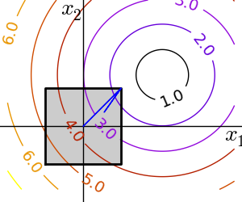scipy.optimize.fminbound() for 1D-optimization
scipy.optimize.fmin_l_bfgs_b() a quasi-Newton method with bound constraints:
>>> def f(x):
... return np.sqrt((x[0] - 3)**2 + (x[1] - 2)**2)
>>> optimize.fmin_l_bfgs_b(f, np.array([0, 0]), approx_grad=1,
bounds=((-1.5, 1.5), (-1.5, 1.5)))
(array([ 1.5, 1.5]), 1.5811388300841898, {'warnflag': 0, 'task': 'CONVERGENCE: NORM_OF_PROJECTED_GRADIENT_<=_PGTOL', 'grad': array([-0.94868331, -0.31622778]), 'funcalls': 3})
Equality and inequality constraints specified as functions: f(x) = 0 and g(x)< 0.
scipy.optimize.fmin_slsqp() Sequential least square programming: equality and inequality constraints:
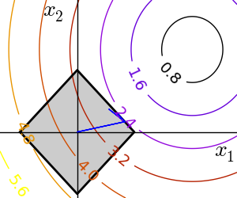>>> def f(x):
... return np.sqrt((x[0] - 3)**2 + (x[1] - 2)**2)
>>> def constraint(x):
... return np.atleast_1d(1.5 - np.sum(np.abs(x)))
>>> optimize.fmin_slsqp(f, np.array([0, 0]), ieqcons=[constraint, ])
Optimization terminated successfully. (Exit mode 0)
Current function value: 2.47487373504
Iterations: 5
Function evaluations: 20
Gradient evaluations: 5
array([ 1.25004696, 0.24995304])
scipy.optimize.fmin_cobyla() Constraints optimization by linear approximation: inequality constraints only:
>>> optimize.fmin_cobyla(f, np.array([0, 0]), cons=constraint)
Normal return from subroutine COBYLA
NFVALS = 36 F = 2.474874E+00 MAXCV = 0.000000E+00
X = 1.250096E+00 2.499038E-01
array([ 1.25009622, 0.24990378])
Warning
The above problem is known as the Lasso problem in statistics, and there exists very efficient solvers for it (for instance in scikit-learn). In general do not use generic solvers when specific ones exist.
Lagrange multipliers
If you are ready to do a bit of math, many constrained optimization problems can be converted to non-constrained optimization problems using a mathematical trick known as Lagrange multipliers.

{kind=link}
{kind=link}
{kind=link}
{kind=link}
{kind=link}
{kind=link}
{kind=link}
{kind=link}
{kind=link}
{kind=link}
{kind=link}
{kind=link}
{kind=link}
{kind=link}
{kind=link}
{kind=link}
{kind=link}
{kind=link}
{kind=link}
{kind=link}
{kind=link}
{kind=link}
{kind=link}
{kind=link}
{kind=link}
{kind=link}
{kind=link}
{kind=link}
{kind=link}
{kind=link}
{kind=link}
{kind=link}
{kind=link}
{kind=link}
{kind=link}